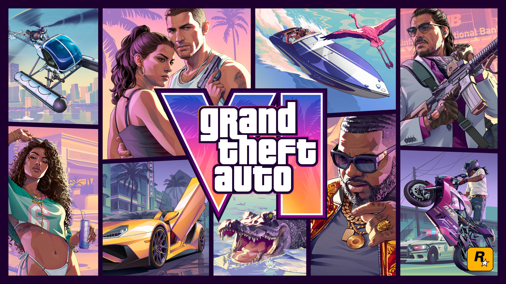

GTA 6: Verhaal & Vice City
Alles over de meest verwachte game aller tijden: personages, de wereld en actie!
⬅ Terug naar Hoofdpagina
🌴 Terugkeer naar Vice City & Leonida
Grand Theft Auto VI neemt ons mee terug naar de iconische neonverlichte straten van Vice City, gelegen in de fictieve Amerikaanse staat Leonida (gebaseerd op Florida). De game belooft de grootste, meest gedetailleerde en meest levendige open wereld te worden die Rockstar Games ooit heeft gemaakt.
🌴 Vice City (Leonida)
👫 Lucia & Jason
🎮 Rockstar Games
🔥 Next-Gen Realisme
💥 Belangrijkste Details & Features
👫
Het Duo: Lucia & Jason
Voor het eerst in de geschiedenis van GTA spelen we met een vrouwelijke hoofdpersoon: Lucia! Samen met haar partner Jason vormt zij een modern 'Bonnie & Clyde'-duo dat samen overvallen pleegt en op het verkeerde pad belandt.
Voor het eerst in de geschiedenis van GTA spelen we met een vrouwelijke hoofdpersoon: Lucia! Samen met haar partner Jason vormt zij een modern 'Bonnie & Clyde'-duo dat samen overvallen pleegt en op het verkeerde pad belandt.
🌴
De Wereld van Leonida
Naast de drukke stad met stranden en wolkenkrabbers verken je ook de moerassen (de 'Everglades'), kleine eilanden, snelwegen en levendige buurten vol bizarre inwoners.
Naast de drukke stad met stranden en wolkenkrabbers verken je ook de moerassen (de 'Everglades'), kleine eilanden, snelwegen en levendige buurten vol bizarre inwoners.
📱
Social Media & Next-Gen Realisme
In de game spelen social media (zoals TikTok en Instagram Reels) een grote rol. Overal in de stad zie je mensen live streamen, grappige filmp
In de game spelen social media (zoals TikTok en Instagram Reels) een grote rol. Overal in de stad zie je mensen live streamen, grappige filmp